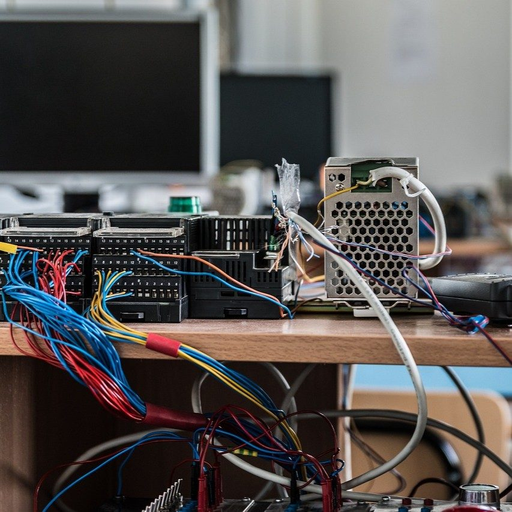
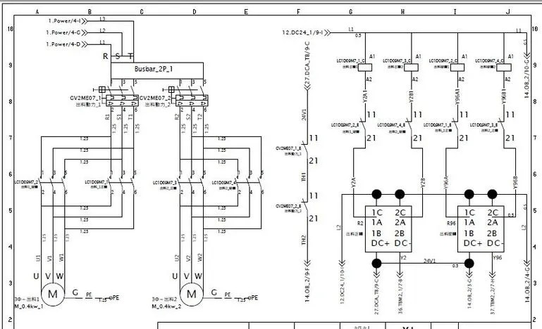

我可以幫你做這些事
不確定需要哪一種？直接跟我說你遇到的狀況，我幫你判斷該怎麼做。
自動化設備電控
新設備從無到有，或舊設備要升級自動化。
- PLC 程式撰寫（LD／ST／SFC）
- 人機介面、電腦圖控畫面規劃
- 伺服、變頻器、感測器整合
- 整機電控規劃與試機上線
設備查修與改善
設備常當機、動作不穩、效率不好，幫你找出根本原因。
- 電路／程式異常查修
- 設備改造、配電調整
- 溫控 PID 調適、升溫曲線優化
- 現有設備流程優化
電路圖繪製＆BOM
沒有圖面、圖面跟現場對不起來，或新案需要出圖。
- AutoCAD／Visio 電路圖繪製
- 現場配線反推補圖
- 材料 BOM 表開立
- 配電盤、電氣箱配線規劃
小工具＆資料整合
重複的手工作業，交給程式自動處理。
- Excel 函數、VBA 自動化報表
- C# 桌面小工具開發
- MySQL／Access／MSSQL 資料庫應用
- Modbus RTU、TCP/IP 設備通訊收資料
室內配線＆水電
乙級室內配線技術士，家裡或店面的電路問題。
- 家用電路查修、跳電排查
- 插座、開關、電力元件更換
- 配管、拉線
- 簡易自來水管配管
教育訓練＆技術文件
設備交機後，讓現場人員看得懂、用得順。
- 操作與維護教學手冊製作
- 新人教育訓練
- 設備資料彙整、訂立作業規則
做過的事
問題 → 做法 → 結果。

熱壓機升溫速率 3℃ → 5℃／分
電熱式熱壓機是斜率升溫，目標溫度會隨時間一直變，原本最多每分鐘升 3℃，跟不上曲線。我深入研究 PID 調整，把升溫曲線優化到每分鐘 5℃，而且能跟上目標溫度。

動力與控制迴路圖面
從電源、斷路器、電磁接觸器到馬達與 DC24V 控制迴路，完整規劃並繪製電路圖，現場配線與日後維修都有圖可依。
日本驗收、中國上線
到職 3 個月就赴日本出差，設備順利驗收；半年後赴中國處理全自動流程的缺漏，讓設備成功上線。
被客戶指定上門維修
擔任公司與客戶之間的橋樑，把設備問題處理到位，在職期間有客戶指定由我到場維修。
用得到的工具，我都熟
遇到沒用過的系統也不怕：AB PLC、iFIX、InduSoft、MySQL、PID 都是到職後靠自學做到獨立作業。
PLC
- 台達
- 三菱
- 基恩斯
- AB
- Codesys
- LD
- ST
- SFC
人機／圖控
- 台達
- 威綸
- Pro-face
- 研華
- InduSoft Web Studio
- iFIX
程式＆資料庫
- C#
- ASP.NET
- VBA
- VBScript
- MySQL
- MSSQL
- Access
- Git
通訊＆驅動
- Modbus RTU
- TCP/IP
- 伺服
- 變頻器
- 台達
- 安川
- 工控儀表
- 各式感測器
繪圖＆文書
- AutoCAD
- Solid Edge
- Visio
- Excel 函數／樞紐
- Outlook
設備類型經驗
- PCB 壓合機
- 切張機
- 鋼構加工機
- 面板業無塵室設備
- 沖床配電盤
- 客製化設備
為什麼可以找我
「先處理心情，再處理事情。」
我在自動化設備領域超過十年，一路從配線、識圖，到電路圖繪製、寫程式、規劃人機與圖控，再到整台設備的規劃，一步一步做上來。所以從現場到程式，我都能用同一個人的角度把問題串起來看。
遇到問題，我會去找底層原因，不停在表面。做事理性、重邏輯，也喜歡把話說在前頭：能做什麼、做不到什麼、要多久，一開始就講清楚。客戶和我一樣，都希望設備好用、沒問題，這就是我做事的目標。
經歷一覽
- 2024 – 2026電控工程師PCB 壓合機、切張機電控；InduSoft／iFIX 圖控、PID 調適、海外試機、教育訓練
- 2023 – 2024後端工程師C# Web API 對接、MSSQL、測試除錯
- 2022 – 2023電控工程師鋼構加工機配線、電路圖、Codesys／C# 程式、調機查修
- 2020 – 2022自動化工程師開 BOM、配線、裝機測試；台達 PLC／人機、伺服變頻；帶領 4 人以下團隊
- 2019 – 2020駐點工程師面板業無塵室設備維修、電路／軟體查修、設備改造
- 2017 – 2019工程師客製化設備；基恩斯 PLC、AutoCAD 電路圖、裝機測試
- 2014 – 2016配線人員沖床配電盤配線、電氣箱組裝、現場施工配電
合作流程
簡單、透明，每一步你都知道進度。
聊需求
先說說設備狀況或想做的事，照片、影片、圖面都歡迎。
評估方案
說明做法、需要的時間與費用，把話說在前頭。
執行
到場或遠端進行，過程中隨時回報。
交付＆說明
交付成果與文件，教會你的人怎麼用、怎麼維護。
常見問題
我的設備品牌你沒用過，可以處理嗎？
可以先聊聊。我很多系統都是遇到之後自學到能獨立作業，PLC、人機的觀念是相通的。
可以到場嗎？服務範圍在哪？
中部地區都可以到場。程式、圖面、小工具類的需求也可以遠端進行。
怎麼收費？
依需求內容評估報價，會在開始前講清楚，不會做到一半才加價。
為什麼打電話你沒接？
我不接聽未知來電，麻煩先用 Email 留言，說明一下需求，我會盡快回覆。
設備有狀況？來聊聊吧
請先用 Email 簡單說明需求（附照片更好），我會盡快回覆。